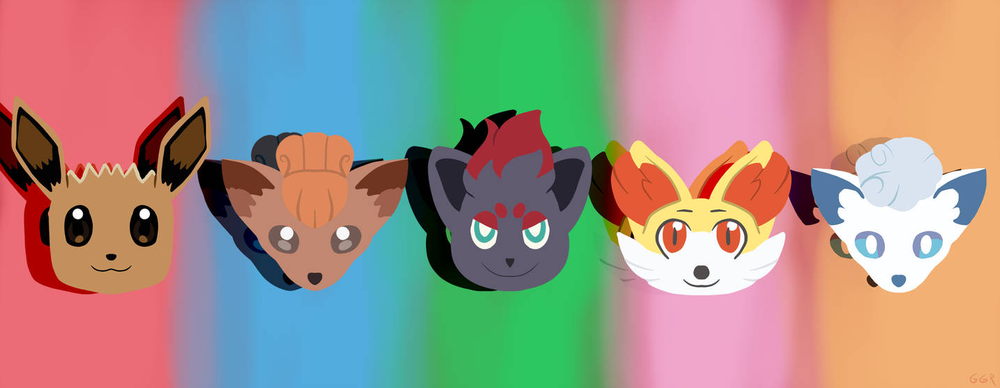
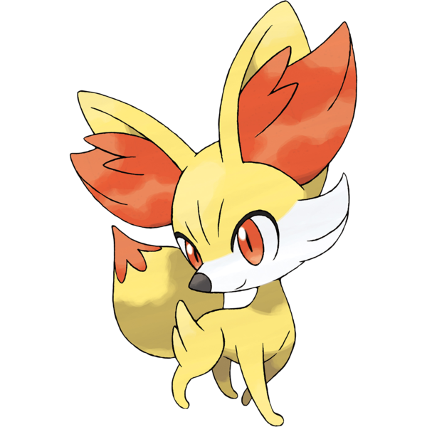
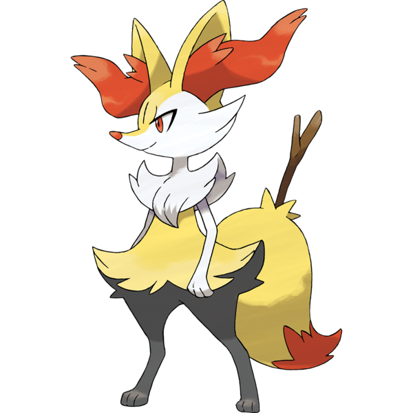
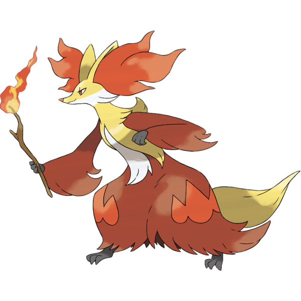

The Real Fox Pokémon

Fennekin is a small, quadruped fox-like Pokémon. It is covered in pale yellow fur that is longer on its haunches. It has a white muzzle with longer fur on its cheeks, large, dark orange eyes, and a pointed, black nose. When its mouth is open, two pointed teeth can be seen in its upper jaw. Tufts of dark orange fur cover the interior of its large ears. Fennekin also has small paws with no visible toes and slim legs. Its tail is fluffy with a dark orange tip.
Hot air is vented from Fennekin's ears, reaching temperatures of over 390 degrees Fahrenheit (200 degrees Celsius). It uses this ability to intimidate opponents. Fennekin chews on twigs, which fill it with energy. It can be temperamental, but it tries to do its best for its Trainer.

Braixen is a bipedal, fox-like Pokémon. While the majority of its fur is yellow, it has black legs, white arms and face, and a dark orange tail tip. The fur on its cheeks is longer, and a small mane of white fur covers its shoulders and chest. Long, wavy tufts of dark orange fur grow out of its large ears, and its eyes and small nose match this fur in color. When its mouth is open, two pointed teeth can be seen in its upper jaw. Above its legs, the fur sweeps out to either side, resembling a skirt or shorts. Each paw has three small digits. Braixen always keeps a stick in its tail, which it sets alight using friction from its bushy tail fur. The flame from the lit twig is used for both attack and communication.

Delphox is a bipedal, fox-like Pokémon. It is covered in a coat of long fur that resembles a robe. This "robe" is primarily dark red with red-orange, flame-like markings near its knees. There is also a thin tuft of white fur on its torso, which is flanked by yellow fur draping down from its shoulders. Its forearms feature long red fur resembling sleeves, and its hands and feet are dark gray with three clawed fingers and toes, respectively. A tail covered in yellow fur protrudes from its "robe". Its head is yellow with longer white fur on its cheeks. It has red eyes and a slender snout with a pinkish nose. Three tufts of red-orange fur protrude out of each ear. When its mouth is open, two pointed teeth can be seen on its upper jaw.